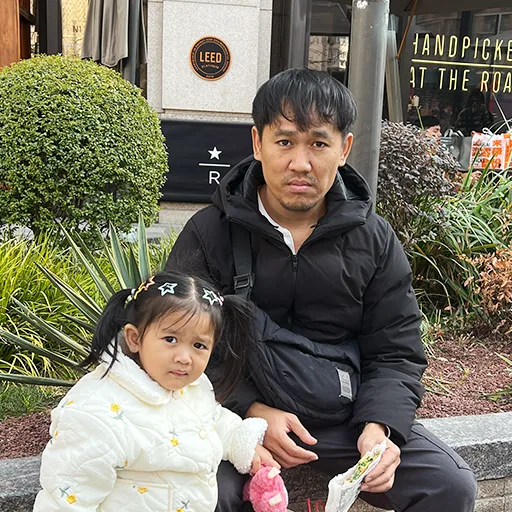

24S Energy
GRAPHIC & WEBProduct campaigns & digital presentation
- Social and product visuals featuring KSTAR, Solplanet, Sunwoda and TCL.
- Corporate website and product-page layouts, with desktop and mobile presentations.
MULTIMEDIA DESIGNER

Versatile Multimedia Designer with a creative mindset across graphic design, motion, video and web. Adapts ideas, techniques and AI tools to fit each project and improve the creative workflow. Brings clear, approachable communication, structured thinking and a strong sense of responsibility to the team, working well with others from the initial brief through delivery.
GRAPHIC / MOTION / DIGITAL
Product campaigns & digital presentation
Energy products & promotional content
SUNWODA Thailand · Sustain Asia Week 2024
Shanghai · Maldives